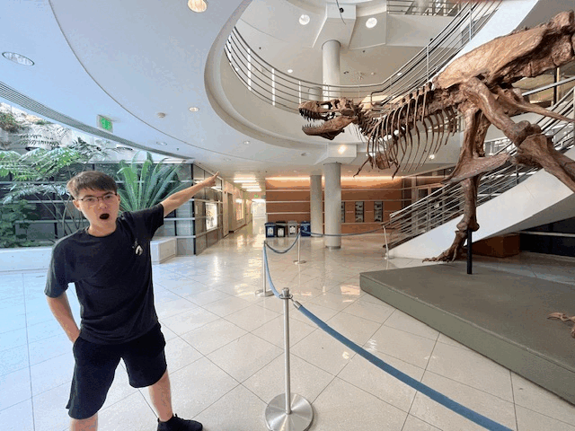

Part 2: Architectural Perspective Compression
Zooming in on the cherry trees on the west side of campus.

An introductory project to the course, I explore the intuitive effects of perspective, focal length/zoom, and the center of projection.
A selfie ... but maybe not the regular kind.
Zooming in on the cherry trees on the west side of campus.
Recreating "Vertigo shot" effect, with a fossilized co-star.
